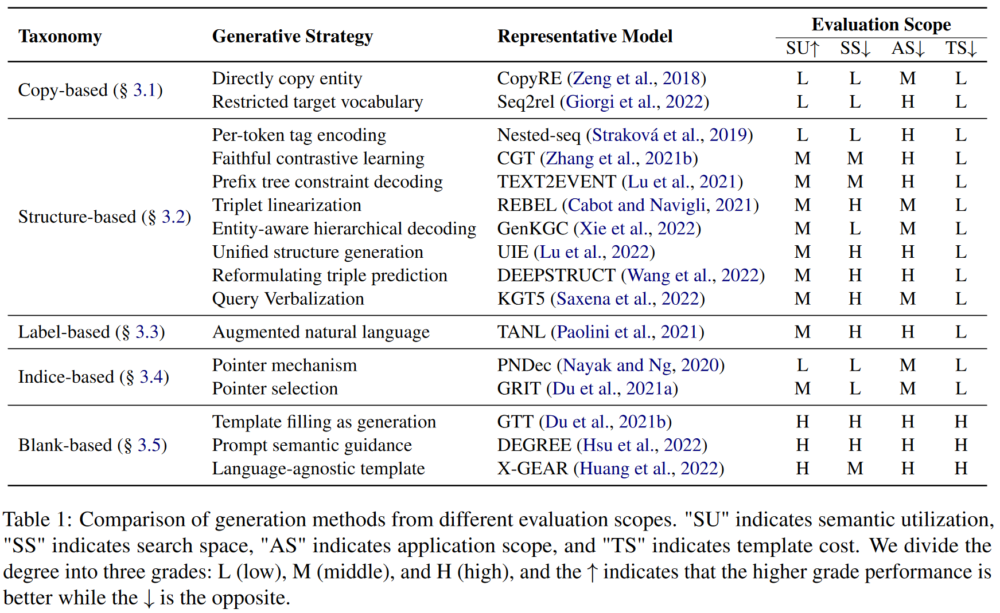
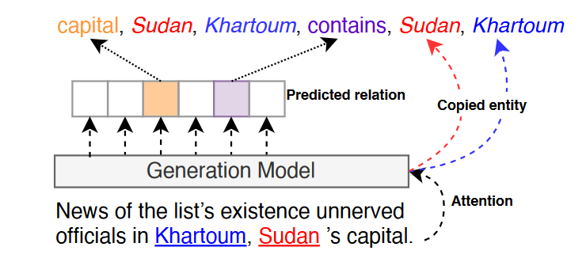
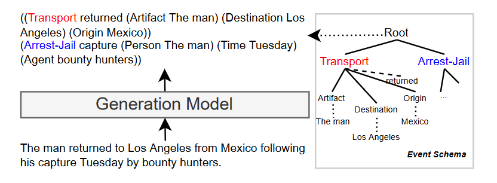
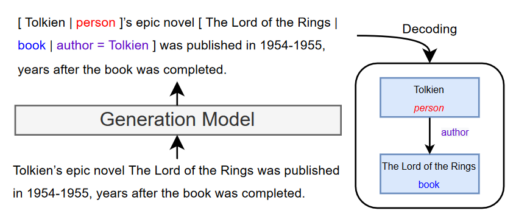
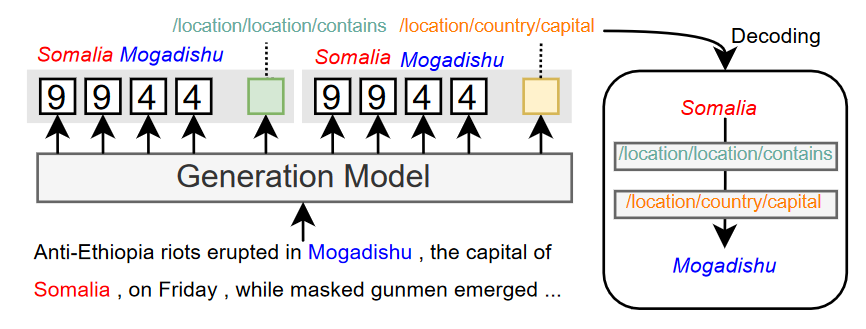
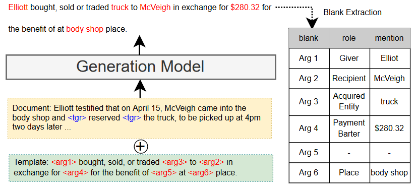

1 BK
- Knowledge Graphs (KGs) as a form of structured knowledge have drawn significant attention from academia and the industry.
- Knowledge Graph Construction (KGC) is proposed, which is the process of populating (or building from scratch) a KG with new knowledge elements (e.g., entities, relations, events).
- mainly aims to extract structural information from unstructured texts, such as
- Named Entity Recognition (NER): aims to identify the types of entities
- Relation Extraction (RE): aims to identify the relationship of the given entity pair
- Event Extraction (EE): aims to identify the event type
- Entity Linking (EL): aims to link the mention to entity
- Knowledge Graph Completion: aims to complete incomplete triples for blank entities
- KGC can be regarded as structure prediction tasks, where a model is trained to approximate (逼近) a target function , where denotes the input data and denotes the output structure sequence.
- mainly aims to extract structural information from unstructured texts, such as
- Conventionally
- KGC is solved by employing task-specific discriminators for the various types of information in a pipeline manner (以流水线的方式)
- However, this presents limitations of error population and poor adaptability for different tasks.
- Generative Knowledge Graph Construction
- generative KGC methods based on the sequence-to-sequence (Seq2Seq) framework are proposed to overcome this barrier
2 Discrimination Methodologies
- the goal of the discrimination model is to predict the possible label based on the characteristics of the input sentence
- discriminative methods extracts relational triples from unstructured text according to a predefined schema to efficiently construct large-scale knowledge graphs, these elaborate models focus on solving a specific task of KGC, such as predicting relation and event information from a segment of input text which often requires multiple models to process.
3 Generation Methodologies
- For the generation model, if is the input sentence and the result of linearized triplets, the target for the generation model is to autoregressively given :
3.1 Advantages of the Generation Methods
- The idea of formulating KGC tasks as Seq2Seq problems will be of great benefit to develop a universal architecture to solve different tasks, which can be free from the constraints of dedicated architectures, isolated models, and specialized knowledge sources.
- Generative models can be pre-trained in multiple downstream tasks by structurally consistent linearization (结构一致的线性化处理) of the text, which facilitates the transition from tranditional understanding to structured understanding and increase knowledge sharing.
- In contexts with nested labels in NER, the proposed generative method implicitly models the structure between named entities, thus avoiding the complex multi-label mapping.
- Zeng et al. introduce a fresh perspective to revisit the RE task with a general generative framework that addresses the problem by end-to-end model.
3.2 Different evaluation scopes
- Semantic utilization: the degree to which the model leverages the semantics of the labels.
- In principle, we believe that the closer the output form is to natural language, the smaller the gap between the generative model and the training task.
- the blank-based paradigm has a clear advantage in this scope, which uses manually constructed templates to make the output close to natural language fluency.
- Search space: the vocabulary space searched by the decoder.
- Due to the application of the constraint decoding mechanism, some structure-based methods can be reduced to the same decoding space as the copy-based methods.
- The indice-based paradigm uses a pointer mechanism that constrains the output space to the length of the input sequence.
- Application scope: the range of KGC tasks that can be applied.
- architectures with ability to organize information more flexibly have excellent cross-task migration capabilities
- such as structure-based, label-based and blank-based paradigms.
- Template cost: the cost of constructing the input and golden output text.
- the most paradigms do not require complex template design and rely only on linear concatenation to meet the task requirement.
- However, the blank-based paradigm requires more labor consumption to make the template conform to the semantic fluency requirement.
4 Taxonomy of Generative Knowledge Graph Construction

A unifying theme across many of these methods is that of end-to-end architecture or the idea that the knowledge extraction can be redefined as text sequence to structure generation task.
4.1 copy-based Sequence
This paradigm refers to developing more robust models to copy the corresponding token (entity) directly from the input sentence (直接从输入的句子中复制相应的令牌实体) during the generation process.
This paradigm avoid models generating ambiguous or hallucinative entities.
| Paper | Desc |
|---|---|
| Zeng et al (2018)[1] | design an end-to-end model based on a copy mechanism to solve the triple overlapping problem (解决三元组重叠问题). |
| Zeng et al (2019)[2] | In order to identify a reasonable triple extraction order, Zeng et al (2019) converts the triplet generation process into a reinforcement learning process, enabling the copy mechanism to follow an efficient generative order. |
| Zeng et al. (2020)[3] | Since the entity copy mechanism relies on unnatural masks to distinguish between head and tail entities (依靠非自然的标记来区分头部和尾部实体), Zeng et al. (2020) maps the head and tail entities to fused feature space for entity replication by an additional nonlinear layer (通过一个额外的非线性层，融合特征空间进行实体复制), which strengthens the stability of the mechanism. |
| Huang et al. (2021)[4] | For document-level extraction, Huang et al. (2021) proposes a TOP-k copy mechanism to alleviate the computational complexity of entity pairs (降低对实体对的计算复杂度). |
4.2 structure-linearized Sequence
This paradigm refers to utilizing structural knowledge and label semantics, making it prone to handling a unified output format. 该范式是指利用结构化知识和标签语义，使其易于处理统一的输出格式。
| Paper | Desc |
|---|---|
| Lu et al. (2021)[5] | propose an end-to-end event extraction model based on T5, where the output is a linearization of the extracted knowledge structure. In order to avoid introducing noise, it utilizes the event schema to constrain decoding space, ensuring the output text is semantically and structurally legitimate. |
| Lou et al. (2021)[6] | Lou et al. (2021) reformulates event detection as a Seq2Seq task and proposes a Multi-Layer Bidirectional Network (MLBiNet) to capture the document-level association of events and semantic information simultaneously. |
| Zhang et al. (2021b)[7], Ye et al. (2021)[8], Zhu et al. (2020)[9] | introduce a contrastive learning framework (对比学习框架) with a batch dynamic attention masking mechanism to overcome the contradiction in meaning that generative architectures may produce unreliable sequences (克服了生成式框架可能产生不可靠序列意义上的矛盾). |
| Cabot and Navigli (2021)[10] | employ a simple triplet decomposition method (三元组分解方法) for the relation extraction task, which is flexible and can be adapted to unified domains or longer documents. |
| Strakova et al. (2019)[11] | In the nested NER task, Strakova et al. (2019) proposes a flattened encoding algorithm, which outputs multiple NE tags following the BILOU scheme. |
| Zhang et al. (2022b)[12] | Zhang et al. (2022b) eliminates the incorrect biases in the generation process (消除生成过程中的不正确偏差) according to the theory of backdoor adjustment. |
| Cao et al. (2021)[13] | In EL task, Cao et al. (2021) proposes Generative ENtity REtrieval (GENER) in an autoregressive fashion conditioned on the context (以上下文为条件的自回归方式), which capture fine-grained interactions (细粒度交互) between context and entity name. |
| Wang et al. (2022)[14]; Lu et al. (2022)[15] | Wang et al. (2022); Lu et al. (2022) extends the domain to structural heterogeneous information extraction by proposing a unified task-agnostic generation framework (通过提出统一的任务无关生成框架，将领域扩展到结构化异构信息提取). |
4.3 label-augmented Sequence (暂不考虑)
This paradigm refers to utilizing the extra markers to indicate specific entities or relationships. 这种范式是指利用额外的标记来表示特定的实体或关系。
In addition, this paradigm uses square brackets or other identifiers to specify the tagging sequence for the entity of interest. The relevant labels are separated by the separator “|” within the enclosed brackets. Meanwhile, the labeled words are described with natural words so that the potentional knowledge of the pre-trained model can be leveraged.
Since the length of the gold decoder targets is often longer than the corresponding input length, this paradigm is unsuitable for document-level tasks because a great portion of the gold labels will be skipped.
| Paper | Desc |
|---|---|
| Athiwaratkun et al. (2020b)[16] | investigates the label-augmented paradigm (标签增强范式) for various structure prediction tasks. The output sequence copies all words in the input sentence, as it helps to reduce ambiguity. |
| Athiwaratkun et al. (2020a)[17] | naturally combines tag semantics and shares knowledge across multiple sequence labeling tasks 自然地结合标签语义，在多个序列标注任务中共享知识。 |
| Cao et al. (2021)[13:1] | To retrieve entities by generating their unique names, Cao et al. (2021) extends the autoregressive framework to capture the relations between context and entity name by effectively cross-encoding both. |
4.4 indice-based Sequence
The paradigm generates the indices of the words in the input text of interest directly and encodes class labels as label indices. 该范式直接生成输入文本中感兴趣单词的索引，并将类标签编码为标签索引。
As the output is strictly restricted, it will not generate indices that corresponding entities do not exist in the input text, except for relation labels. 由于输出受到严格的限制，它不会生成输入文本中不存在对应实体的索引，除了关系标签。
| Paper | Desc |
|---|---|
| Nayak and Ng (2020)[18] | apply the method to the relation extraction task, enabling the decoder to find all overlapping tuples with full entity names of different lengths 使解码器能够找到所有具有不同长度的完整实体名称的重叠元组。 |
| Yan et al. (2021b)[19] | Yan et al. (2021b) explores the idea of generating indices for NER, which can be applied to different settings such as flat, nested, and discontinuous NER (它可以应用于不同的设置，如平面、嵌套和不连续的NER). |
| Du et al. (2021a)[20] | applies the method to a role-filler entity extraction task (角色填充实体抽取任务) by implicitly capturing noun phrase coreference structure (隐性捕捉名词短语同指结构). |
4.5 blank-based Sequence (暂不考虑)
This paradigm refers to utilizing templates to define the appropriate order and relationship for the generated spans. 该范式是指利用模板为生成的跨度定义合适的顺序和关系。
5 Analysis
5.1 Theoretical Insight
For optimization, NLG are normally modeled by parameterized probabilistic models over text strings $\mathbf{y} = \left \langle y_1, y_2, \dots \right \rangle $ decomposed by words :
where consists of all possible strings that can be constructed from words in the model’s vocabulary .
The output can take on a variety of forms depending on the task, e.g., entities, relational triples, or an event structure. Usually, the model will limit the target set by pre-defined schema as .
The optimization procedure will be taken to estimate the parameters with log-likelihood maximization as follows:
where are the model parameters.
With small output space (e.g., methods with the indice-based sequence), the model can converge faster.
However, the model with a small output space may fail to utilize rich semantic information from labels or text.
In short, the design of output space is vital for generative KGC, and it is necessary to balance parametric optimization as well as semantic utilization.
For inference, we argue that sequence decoding in the generation is an essential procedure for generative KGC.
Given the probabilistic nature of , the decoding process will select words that maximize the probality of the resulting string.
Xiangrong Zeng, Daojian Zeng, Shizhu He, Kang Liu, and Jun Zhao. 2018. Extracting relational facts by an end-to-end neural model with copy mechanism. In Proceedings of the 56th Annual Meeting of the Association for Computational Linguistics, ACL 2018, Melbourne, Australia, July 15-20, 2018, Volume 1: Long Papers, pages 506–514. Association for Computational Linguistics. ↩︎
Xiangrong Zeng, Shizhu He, Daojian Zeng, Kang Liu, Shengping Liu, and Jun Zhao. 2019. Learning the extraction order of multiple relational facts in a sentence with reinforcement learning. In Proceedings of the 2019 Conference on Empirical Methods in Natural Language Processing and the 9th International Joint Conference on Natural Language Processing, EMNLP-IJCNLP 2019, Hong Kong, China, November 3-7, 2019, pages 367–377. Association for Computational Linguistics. ↩︎
Daojian Zeng, Haoran Zhang, and Qianying Liu. 2020. Copymtl: Copy mechanism for joint extraction of entities and relations with multi-task learning. In The Thirty-Fourth AAAI Conference on Artificial Intelligence, AAAI 2020, The Thirty-Second Innovative Applications of Artificial Intelligence Conference, IAAI 2020, The Tenth AAAI Symposium on Educational Advances in Artificial Intelligence, EAAI 2020, New York, NY, USA, February 7-12, 2020, pages 95079514. AAAI Press. ↩︎
Kung-Hsiang Huang, Sam Tang, and Nanyun Peng. 2021. Document-level entity-based extraction as template generation. In Proceedings of the 2021 Conference on Empirical Methods in Natural Language Processing, EMNLP 2021, Virtual Event / Punta Cana, Dominican Republic, 7-11 November, 2021, pages 5257–5269. Association for Computational Linguistics. ↩︎
Yaojie Lu, Hongyu Lin, Jin Xu, Xianpei Han, Jialong Tang, Annan Li, Le Sun, Meng Liao, and Shaoyi Chen. 2021. Text2event: Controllable sequence-tostructure generation for end-to-end event extraction. In Proceedings of the 59th Annual Meeting of the Association for Computational Linguistics and the 11th International Joint Conference on Natural Language Processing, ACL/IJCNLP 2021, (Volume 1: Long Papers), Virtual Event, August 1-6, 2021, pages 2795–2806. Association for Computational Linguistics. ↩︎
Dongfang Lou, Zhilin Liao, Shumin Deng, Ningyu Zhang, and Huajun Chen. 2021. Mlbinet: A crosssentence collective event detection network. In Proceedings of the 59th Annual Meeting of the Association for Computational Linguistics and the 11th International Joint Conference on Natural Language Processing, ACL/IJCNLP 2021, (Volume 1: Long Papers), Virtual Event, August 1-6, 2021, pages 48294839. Association for Computational Linguistics. ↩︎
Ningyu Zhang, Hongbin Ye, Shumin Deng, Chuanqi Tan, Mosha Chen, Songfang Huang, Fei Huang, and Huajun Chen. 2021b. Contrastive information extraction with generative transformer. IEEE ACM Trans. Audio Speech Lang. Process., 29:3077–3088. ↩︎
Hongbin Ye, Ningyu Zhang, Shumin Deng, Mosha Chen, Chuanqi Tan, Fei Huang, and Huajun Chen. 2021. Contrastive triple extraction with generative transformer. In Thirty-Fifth AAAI Conference on Artificial Intelligence, AAAI 2021, Thirty-Third Conference on Innovative Applications of Artificial Intelligence, IAAI 2021, The Eleventh Symposium on Educational Advances in Artificial Intelligence, EAAI 2021, Virtual Event, February 2-9, 2021, pages 14257–14265. AAAI Press. ↩︎
Chenguang Zhu, William Hinthorn, Ruochen Xu, Qingkai Zeng, Michael Zeng, Xuedong Huang, and Meng Jiang. 2020. Boosting factual correctness of abstractive summarization with knowledge graph. CoRR, abs/2003.08612. ↩︎
Pere-Lluís Huguet Cabot and Roberto Navigli. 2021. REBEL: relation extraction by end-to-end language generation. In Findings of the Association for Computational Linguistics: EMNLP 2021, Virtual Event / Punta Cana, Dominican Republic, 16-20 November, 2021, pages 2370–2381. Association for Computational Linguistics. ↩︎
Jana Straková, Milan Straka, and Jan Hajic. 2019. Neural architectures for nested NER through linearization. In Proceedings of the 57th Conference of the Association for Computational Linguistics, ACL 2019, Florence, Italy, July 28- August 2, 2019, Volume 1: Long Papers, pages 5326–5331. Association for Computational Linguistics. ↩︎
Shuai Zhang, Yongliang Shen, Zeqi Tan, Yiquan Wu, and Weiming Lu. 2022b. De-bias for generative extraction in unified NER task. In Proceedings of the 60th Annual Meeting of the Association for Computational Linguistics (Volume 1: Long Papers), ACL 2022, Dublin, Ireland, May 22-27, 2022, pages 808818. Association for Computational Linguistics. ↩︎
Nicola De Cao, Gautier Izacard, Sebastian Riedel, and Fabio Petroni. 2021. Autoregressive entity retrieval. In 9th International Conference on Learning Representations, ICLR 2021, Virtual Event, Austria, May 3-7, 2021. OpenReview.net. ↩︎ ↩︎
Chenguang Wang, Xiao Liu, Zui Chen, Haoyun Hong, Jie Tang, and Dawn Song. 2022. Deepstruct: Pretraining of language models for structure prediction. In Findings of the Association for Computational Linguistics: ACL 2022, Dublin, Ireland, May 22-27, 2022, pages 803–823. Association for Computational Linguistics. ↩︎
Yaojie Lu, Qing Liu, Dai Dai, Xinyan Xiao, Hongyu Lin, Xianpei Han, Le Sun, and Hua Wu. 2022. Unified structure generation for universal information extraction. In Proceedings of the 60th Annual Meeting of the Association for Computational Linguistics (Volume 1: Long Papers), ACL 2022, Dublin, Ireland, May 22-27, 2022, pages 5755–5772. Association for Computational Linguistics. ↩︎
Ben Athiwaratkun, Cicero Nogueira dos Santos, Jason Krone, and Bing Xiang. 2020b. Augmented natural language for generative sequence labeling. In Proceedings of the 2020 Conference on Empirical Methods in Natural Language Processing (EMNLP). ↩︎
Ben Athiwaratkun, Cícero Nogueira dos Santos, Jason Krone, and Bing Xiang. 2020a. Augmented natural language for generative sequence labeling. In Proceedings of the 2020 Conference on Empirical Methods in Natural Language Processing, EMNLP 2020, Online, November 16-20, 2020, pages 375–385. Association for Computational Linguistics. ↩︎
Tapas Nayak and Hwee Tou Ng. 2020. Effective modeling of encoder-decoder architecture for joint entity and relation extraction. In The Thirty-Fourth AAAI Conference on Artificial Intelligence, AAAI 2020, The Thirty-Second Innovative Applications of Artificial Intelligence Conference, IAAI 2020, The Tenth AAAI Symposium on Educational Advances in Artificial Intelligence, EAAI 2020, New York, NY, USA, February 7-12, 2020, pages 8528–8535. AAAI Press. ↩︎
Hang Yan, Tao Gui, Junqi Dai, Qipeng Guo, Zheng Zhang, and Xipeng Qiu. 2021b. A unified generative framework for various NER subtasks. In Proceedings of the 59th Annual Meeting of the Association for Computational Linguistics and the 11th International Joint Conference on Natural Language Processing, ACL/IJCNLP 2021, (Volume 1: Long Papers), Virtual Event, August 1-6, 2021, pages 5808–5822. Association for Computational Linguistics. ↩︎
Xinya Du, Alexander M. Rush, and Claire Cardie. 2021a. GRIT: generative role-filler transformers for document-level event entity extraction. In Proceedings of the 16th Conference of the European Chapter of the Association for Computational Linguistics: Main Volume, EACL 2021, Online, April 19 - 23, 2021, pages 634–644. Association for Computational Linguistics. ↩︎